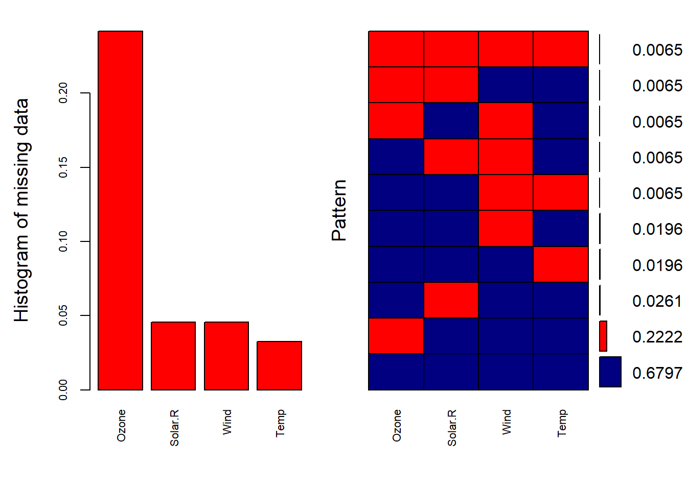
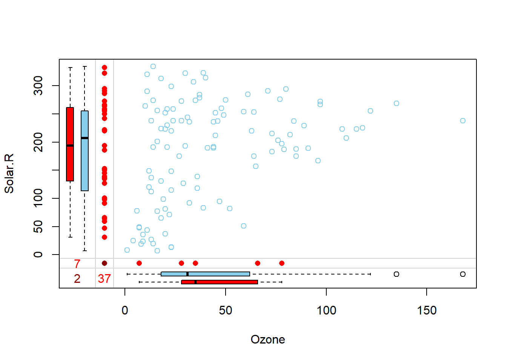
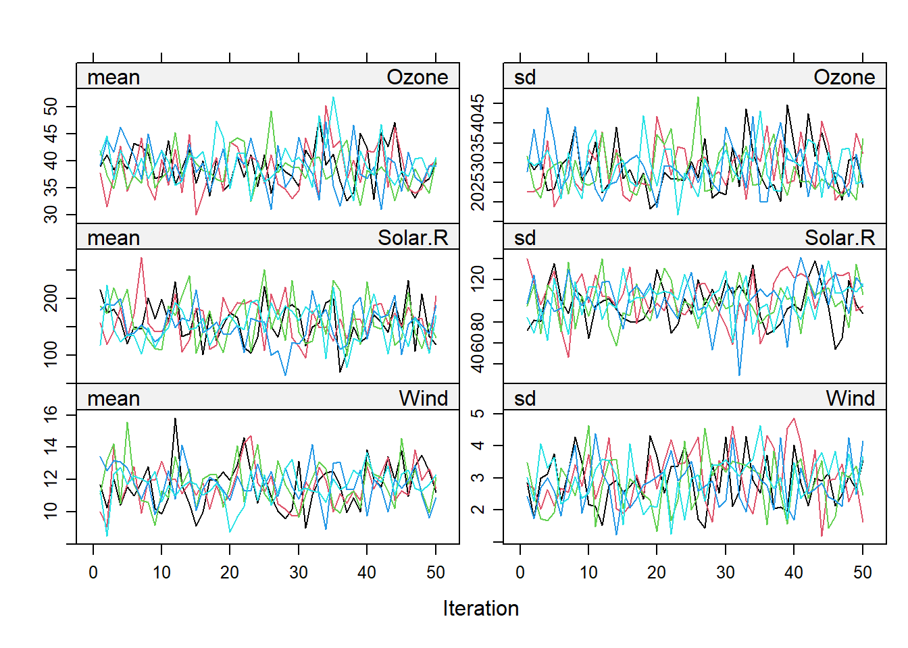
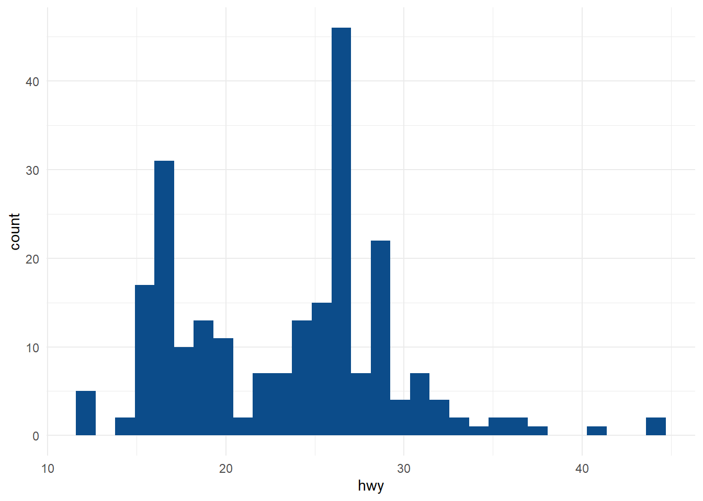
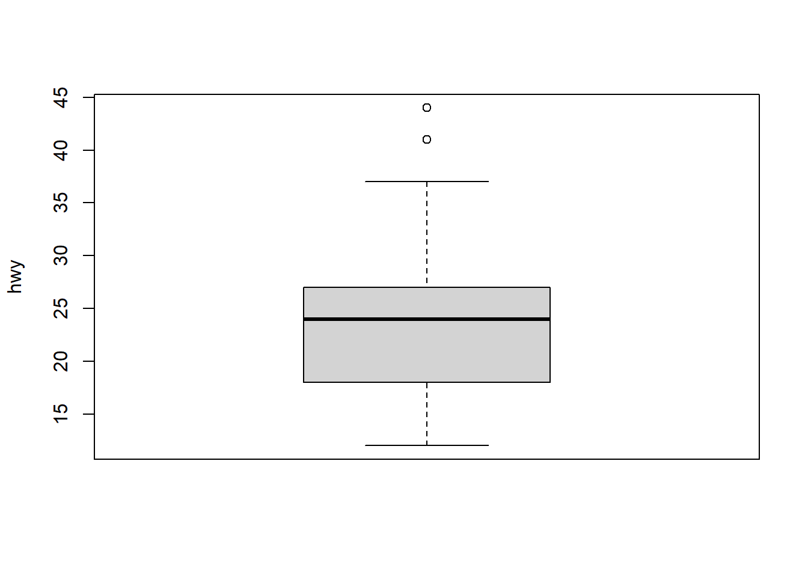
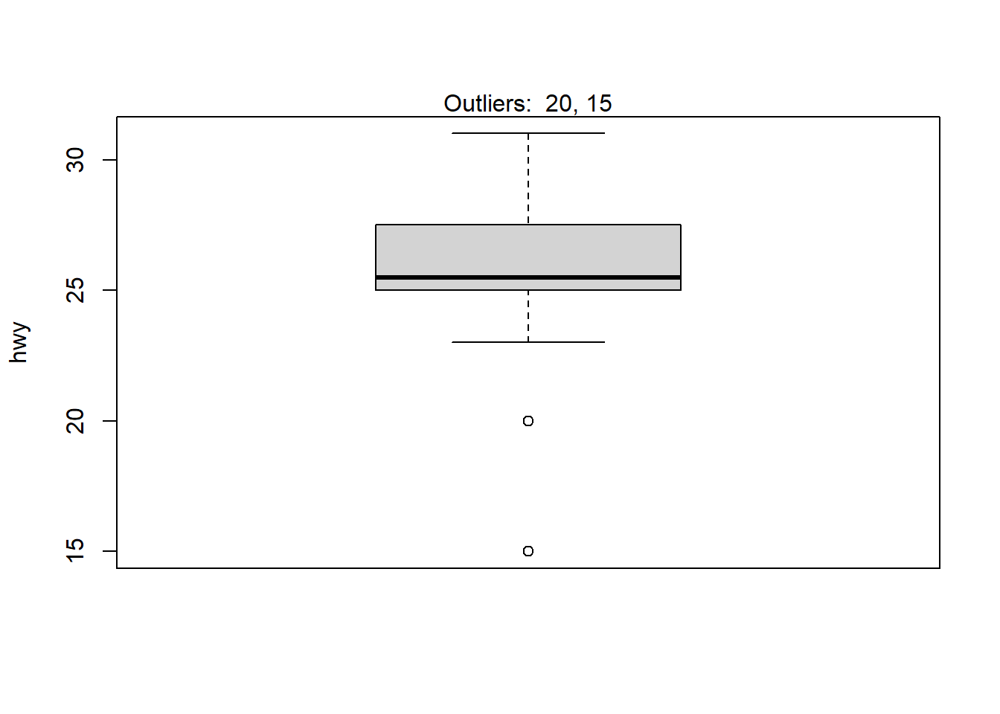

Chapter 2 Análisis con datos faltantes
2.1 Introducción
Los datos faltantes es uno de los temas que se ignoran en la mayoría de los textos introductorios. Probablemente, parte de la razón por la que esto es así es que todavía abundan muchos mitos sobre el análisis con datos ausentes. Además, algunas de las investigaciones sobre técnicas de vanguardia es aún relativamente nueva. Una razón más legítima para su ausencia en los textos introductorios es que la mayoría de las metodologías más de principios son bastante complicadas, desde el punto de vista matemático. Sin embargo, la increíble ubicuidad de los problemas relacionados con los datos faltantes en el análisis de datos de la vida real requiere que se aborde el tema. Esta sección sirve como una suave introducción al tema y a una de las técnicas más eficaces para tratarla. Un refrán común sobre el tema es algo así como que la mejor manera de tratar con los datos que faltan es no tenerlos. Es cierto que los datos que faltan son un tema complicado, y hay muchas maneras de hacerlo mal. Es importante no llevar este consejo al extremo, sin embargo, para eludir los problemas de los datos perdidos, algunos han impedido participantes en una encuesta, que por ejemplo, siguen sin responder a todas las preguntas de un formulario.
Hay tratamientos para los datos que faltan, pero no hay tratamientos para los datos malos. El tratamiento estándar para el problema de los datos que faltan es reemplazar los datos que faltan por valores no ausentes. Este proceso se denomina imputación. En la mayoría de los casos, el objetivo de la imputación no es recrear el conjunto de datos completo perdido, sino permitir que se realicen estimaciones o inferencias estadísticas válidas a partir de los datos perdidos. Por ello, la eficacia de las diferentes técnicas de imputación no puede evaluarse por su capacidad de recrear los datos con la mayor exactitud posible a partir de un conjunto de datos perdidos simulado, sino que deben juzgarse por su capacidad de apoyar las mismas inferencias estadísticas que se obtendrían del análisis de los datos completos que se extraen del análisis.
De este modo, rellenar los datos que faltan es sólo un paso hacia el verdadero objetivo: el análisis. El conjunto de datos imputados rara vez se considera el objetivo final de la imputación. En la práctica, hay muchas formas diferentes de tratar los datos que faltan, algunas son buenas y otras no tanto. Algunas están bien en determinadas circunstancias, pero no en otras. Algunas implican la eliminación de datos perdidos, mientras que otras implican la imputación. Vamos a mencionar brevemente algunos de los métodos más comunes. Sin embargo, el objetivo final de esta sección, es iniciarle en lo que a menudo se describe como el estándar de oro de las técnicas de imputación: la imputación múltiple.
2.2 Visualización de los datos que faltan
- Para demostrar la visualización de patrones de datos ausentes, primero tenemos que crear algunos datos ausentes. Para mostrar cómo utilizar la imputación múltiple en un escenario semirealista, vamos a crear una versión del conjunto de datos
mtcarscon algunos valores perdidos: Configuremosseed(para la aleatoriedad determinista), y creemos una variable para mantener nuestro nuevo conjunto de datos. Los datos se extrajeron de la revista Motor Trend US de 1974 y comprenden el consumo de combustible y 10 aspectos del diseño y el rendimiento de 32 automóviles (modelos de 1973 a 1974).
set.seed(2)
miss_mtcars <- mtcars- En primer lugar, vamos a crear siete valores faltantes en
drat(alrededor del 20 por ciento), cinco valores faltantes en la columnampg(alrededor del 15 por ciento), cinco valores faltantes en la columnacyl, tres valores faltantes enwt(alrededor del 10 por ciento), y tres valores faltantes envs
some_rows <- sample(1:nrow(miss_mtcars), 7)
miss_mtcars$drat[some_rows] <- NA
some_rows <- sample(1:nrow(miss_mtcars), 5)
miss_mtcars$mpg[some_rows] <- NA
some_rows <- sample(1:nrow(miss_mtcars), 5)
miss_mtcars$cyl[some_rows] <- NA
some_rows <- sample(1:nrow(miss_mtcars), 3)
miss_mtcars$wt[some_rows] <- NA
some_rows <- sample(1:nrow(miss_mtcars), 3)
miss_mtcars$vs[some_rows] <- NA- Ahora, vamos a crear cuatro valores que faltan en
qsec, pero sólo para los coches automáticos
only_automatic <- which(miss_mtcars$am==0)
some_rows <- sample(only_automatic, 4)
miss_mtcars$qsec[some_rows] <- NAAhora, echemos un vistazo al conjunto de datos:
head(miss_mtcars)## mpg cyl disp hp drat wt qsec vs am gear carb
## Mazda RX4 21.0 NA 160 110 3.90 2.620 16.46 NA 1 4 4
## Mazda RX4 Wag 21.0 6 160 110 3.90 2.875 17.02 0 1 4 4
## Datsun 710 22.8 NA 108 93 3.85 2.320 18.61 1 1 4 1
## Hornet 4 Drive 21.4 6 258 110 3.08 3.215 19.44 1 0 3 1
## Hornet Sportabout 18.7 8 360 175 3.15 3.440 17.02 0 0 3 2
## Valiant 18.1 6 225 105 NA 3.460 20.22 1 0 3 1- Ahora vamos a visualizar los datos faltantes. La primera forma en que vamos a visualizar el patrón de los datos faltantes es utilizando la función función
md.patterndel paquetemice(que es también el paquete que vamos a utilizar para imputar nuestros datos faltantes). Si no tiene el paquete instálelo antes
library(mice)
md.pattern(miss_mtcars)## disp hp am gear carb wt vs qsec mpg cyl drat
## 12 1 1 1 1 1 1 1 1 1 1 1 0
## 6 1 1 1 1 1 1 1 1 1 1 0 1
## 2 1 1 1 1 1 1 1 1 1 0 1 1
## 3 1 1 1 1 1 1 1 1 0 1 1 1
## 1 1 1 1 1 1 1 1 1 0 0 1 2
## 1 1 1 1 1 1 1 1 0 1 1 1 1
## 1 1 1 1 1 1 1 1 0 0 1 1 2
## 1 1 1 1 1 1 1 0 1 1 0 1 2
## 1 1 1 1 1 1 1 0 0 1 1 1 2
## 1 1 1 1 1 1 1 0 0 1 0 1 3
## 2 1 1 1 1 1 0 1 1 1 1 1 1
## 1 1 1 1 1 1 0 1 1 1 1 0 2
## 0 0 0 0 0 3 3 4 5 5 7 27Un patrón de datos faltantes por fila se refiere a las columnas que faltan en cada fila. Esta función agrega y cuenta el número de filas con el mismo patrón de datos perdidos. Esta función produce una matriz binaria (0 y 1). Las celdas con un 1 representan datos no faltantes; los 0s representan datos que faltan. Como las filas están ordenadas en un orden creciente de ausencia, la primera fila siempre se refiere al patrón de datos ausentes que contiene la menor cantidad de datos faltantes.
La columna más a la izquierda es un conteo del número de filas que muestran el patrón de datos faltantes, y la columna más a la derecha es un recuento del número de puntos de datos perdidos en ese patrón. La última fila contiene un recuento del número de puntos de datos que faltan en cada columna. Como puede ver, 12 de las filas no contienen datos perdidos.
Sólo hay seis filas que contienen más de un valor perdido. Sólo una de estas filas contiene más de dos valores perdidos (como se muestra en la penúltima fila). En cuanto a los conjuntos de datos con datos faltantes, este en particular no contiene mucho. No es raro que en algunos conjuntos de datos falte más del 30% de los datos. Este conjunto de datos no llega ni al 3%. Ahora vamos a visualizar el patrón de datos faltantes gráficamente utilizando el paquete
VIM. Probablemente también tenga que instalarlo.
library(VIM)
aggr(miss_mtcars, numbers=TRUE)marginplot(miss_mtcars[c(1,2)])A simple vista, esta representación nos muestra, sin esfuerzo, que la columna
dratrepresenta la mayor proporción de datos faltantes, por columnas, seguida dempg, cyl, qsec, vsywt. El gráfico de la derecha nos muestra información similar a la de la salida demd.pattern. Esta representación, sin embargo, hace que sea más fácil saber si hay algún patrón sistemático de omisión. Las celdas azules representan los datos no ausentes, y las rojas representan los datos que faltan. Los números de la derecha del gráfico representan la proporción de filas que muestran ese patrón de datos perdidos. El 37,5% de las filas no contienen ningún tipo de dato que falte.El diagrama de caja rojo de la izquierda muestra la distribución de
cylsinmpg, mientras que el diagrama de caja azul muestra la distribución de los restantes puntos de datos. Lo mismo ocurre con los gráficos de caja dempgen la parte inferior del gráfico. Si los datos tienen mecanismoMCARse espera que los gráficos de caja rojos y azules sean muy similares.
2.3 Tipos de datos faltantes
El paquete VIM nos permitió visualizar los patrones de datos que faltaban. Un término relacionado, el mecanismo de datos perdidos, describe el proceso que determina la probabilidad de que cada punto de datos sea faltante. Hay tres categorías principales de mecanismos de datos perdidos: Missing Completely At Random (MCAR), Missing At Random (MAR), y Missing Not At Random (MNAR). La discriminación basada en el mecanismo de datos perdidos es crucial, ya que nos informa sobre las opciones para manejar los datos faltantes.
Faltantes completamente al azar
(MCAR)- El primer mecanismo,
MCAR, se produce cuando la falta de datos no está relacionada con la datos. Esto ocurriría, por ejemplo, si se borraran filas de una base de datos al azar, o si una ráfaga de viento se llevara una muestra aleatoria de los formularios de encuesta de un investigador. El mecanismo que rige la ausencia dedrat, mpg, cyl, wt, yvs’ esMCAR, porque seleccionamos al azar los elementos que faltan. Este mecanismo, aunque es el más fácil de trabajar, rara vez es sostenible en la práctica.
- El primer mecanismo,
Faltantes no aleatorios
(MNAR)- El mecanismo
MNARse produce cuando la ausencia de una variable está relacionada con la variable en sí misma. Por ejemplo, supongamos que la báscula que pesa cada coche tiene una capacidad de sólo 3.700 libras y, por ello, los ocho coches que pesaban más se registraron comoNA. Este es un ejemplo clásico del mecanismoMNAR, es el propio peso de la observación la causa de que falte. Otro ejemplo sería si durante el transcurso del ensayo de un fármaco antidepresivo los participantes a los que no les ayudaba el fármaco se deprimían demasiado para continuar con el ensayo. Al final del ensayo, cuando se accede y se registra el nivel de depresión de todos los participantes, habrá valores que falten para los participantes cuyo motivo de ausencia está relacionado con su nivel de depresión.
- El mecanismo
Faltantes al azar
(MAR)El mecanismo,
faltante al azar, tiene un nombre un tanto desafortunado, al contrario de lo que pueda parecer, significa que existe una relación sistemática entre la ausencia de una variable de resultado y otras variables observadas, pero no la variable de resultado en sí misma.La mejor manera de explicarlo es con el siguiente ejemplo: Supongamos que en una encuesta hay una pregunta sobre el nivel de ingresos. Debido a ello, un gran número de participantes en la encuesta cuya lengua materna no es el inglés no pudo interpretar la pregunta y la dejaron en blanco. Si la encuesta sólo recogía el nombre, el sexo y los ingresos, el mecanismo de datos faltantes de la pregunta sobre los ingresos sería
MNAR. Sin embargo, si el cuestionario incluía una pregunta sobre si el participante hablaba inglés como como primera lengua, el mecanismo seríaMAR. La inclusión de la variable Is English significa que la falta de respuesta a la pregunta sobre los ingresos puede puede explicarse por completo. La razón por la que el nombre falta al azar es que cuando se controla la relación entre la variable omitida y la(s) variable(s) observada(s) con la que está relacionada (por ejemplo, ¿Cuál es su renta? y ¿Es el inglés su primera lengua? respectivamente), los datos faltan al azar.Como otro ejemplo, existe una relación sistemática entre las variables
amyqsecen nuestro conjunto de datos simulados que faltan: losqsecssólo faltan en los coches automáticos. Pero dentro del grupo de coches automáticos, la variableqsecfalta al azar. Por lo tanto, el mecanismo deqsecesMAR; controlando el tipo de transmisión,qsecfalta al azar. Tenga en cuenta, sin embargo, que si eliminamosamde nuestro conjunto de datos simulado,qsecse convertiría enMNAR.
Observación
- Quizá haya observado que el lugar que ocupa un conjunto de datos concreto en la taxonomía del mecanismo de datos perdidos depende de las variables que incluye. Por ejemplo, sabemos que el mecanismo detrás de
qsecesMAR, pero si el conjunto de datos no incluyeraam, seríaMNAR. Como somos nosotros los que creamos los datos, sabemos el procedimiento que dio lugar a los valores perdidos deqsec. Si no fuéramos nosotros los que creamos los datos, como ocurre en el mundo real, y el conjunto de datos no contuviera la columnaamsimplemente veríamos una cantidad de valoresqsecque faltan arbitrariamente. Esto podría llevarnos a creer que los datos sonMCAR. Sin embargo, no lo es; sólo porque la variable con la cual otra variable faltante está sistemáticamente relacionada no se observa, no quiere decir que esta no exista. Esto plantea una cuestión crítica: ¿podemos estar seguros de que nuestros datos no sonMCAR? La respuesta desafortunada es no. Dado que los datos que necesitamos para demostrar o refutar elMNARfaltan ipso facto, la suposición deMNARnunca puede ser desconfirmada de forma concluyente. Es nuestro trabajo, como analistas de datos con pensamiento crítico, preguntar si es probable que haya un mecanismoMNARo no.
- Quizá haya observado que el lugar que ocupa un conjunto de datos concreto en la taxonomía del mecanismo de datos perdidos depende de las variables que incluye. Por ejemplo, sabemos que el mecanismo detrás de
2.3.1 Visualización de datos faltantes
Tomando el conjunto de datos
airquality, un conjunto de datos de mediciones diarias de la calidad del aire en Nueva York de mayo a septiembre de 1973, que tiene valoresNAdentro de sus variables. Las filas del conjunto de datos representan 154 días consecutivos. Cualquier eliminación de estas filas afectará a la continuidad del tiempo, lo que puede afectar a cualquier análisis de series temporales que se realice. Veamos con más detalle el conjunto de datos de la calidad del aireIniciamos visualizando los datos faltantes. Eliminaremos algunos puntos de datos del conjunto de datos para este ejemplo. En lo que respecta a las variables categóricas, la sustitución de las mismas no suele ser aconsejable. Algunas prácticas comunes incluyen la sustitución de las variables categóricas que faltan por la moda de las observadas, sin embargo, es cuestionable si es una buena opción. Aunque en este caso no faltan puntos de datos de las variables categóricas, las eliminamos de nuestro conjunto de datos (podemos volver a añadirlas más tarde si es necesario) y echamos un vistazo a los datos utilizando
summary()
data <- airquality
head(data)## Ozone Solar.R Wind Temp Month Day
## 1 41 190 7.4 67 5 1
## 2 36 118 8.0 72 5 2
## 3 12 149 12.6 74 5 3
## 4 18 313 11.5 62 5 4
## 5 NA NA 14.3 56 5 5
## 6 28 NA 14.9 66 5 6# data <- airquality
data[4:10, 3] <- rep(NA, 7)
data[1:5, 4] <- NAdata <- data[-c(5,6)]
summary(data)## Ozone Solar.R Wind Temp
## Min. : 1.00 Min. : 7.0 Min. : 1.700 Min. :57.00
## 1st Qu.: 18.00 1st Qu.:115.8 1st Qu.: 7.400 1st Qu.:73.00
## Median : 31.50 Median :205.0 Median : 9.700 Median :79.00
## Mean : 42.13 Mean :185.9 Mean : 9.806 Mean :78.28
## 3rd Qu.: 63.25 3rd Qu.:258.8 3rd Qu.:11.500 3rd Qu.:85.00
## Max. :168.00 Max. :334.0 Max. :20.700 Max. :97.00
## NA's :37 NA's :7 NA's :7 NA's :5head(data)## Ozone Solar.R Wind Temp
## 1 41 190 7.4 NA
## 2 36 118 8.0 NA
## 3 12 149 12.6 NA
## 4 18 313 NA NA
## 5 NA NA NA NA
## 6 28 NA NA 66- Al parecer, el
Ozonees la variable con más puntos de datos perdidos. A continuación vamos a profundizar en los patrones de datos que faltan. Suponiendo que los datos seanMCAR, demasiados datos perdidos también pueden ser un problema. Por lo general, un umbral máximo seguro es el 5% del total para conjuntos de datos grandes. Si los datos que faltan para una determinada característica o muestra son superiores al 5%, probablemente deba dejar de lado esa característica o muestra. Por lo tanto, comprobamos las características (columnas) y las muestras (filas) en las que falta más del 5% de los datos mediante una sencilla función
pMiss <- function(x){sum(is.na(x))/length(x)*100}
apply(data,2,pMiss)## Ozone Solar.R Wind Temp
## 24.183007 4.575163 4.575163 3.267974Vemos que al ozono le falta casi el 25% de los puntos de datos, por lo que podríamos considerar la posibilidad de eliminarlo del análisis o de reunir más mediciones. Las demás variables están por debajo del umbral del 5%, por lo que podemos mantenerlas.
Usemos
md.pattern()para conocer mejor el patrón de los datos que faltan
library(mice)
md.pattern(data, rotate.names = TRUE)
## Temp Solar.R Wind Ozone
## 104 1 1 1 1 0
## 34 1 1 1 0 1
## 3 1 1 0 1 1
## 1 1 1 0 0 2
## 4 1 0 1 1 1
## 1 1 0 1 0 2
## 1 1 0 0 1 2
## 3 0 1 1 1 1
## 1 0 1 0 1 2
## 1 0 0 0 0 4
## 5 7 7 37 56- La salida nos dice que 104 muestras están completas, que a 34 muestras les falta sólo la medición de
Ozone, que a 4 muestras les falta sólo el valor deSolar.Ry así sucesivamente. Una representación visual quizás más útil puede obtenerse utilizando el paqueteVIMde la siguiente manera
library(VIM)
aggr_plot <- aggr(data, col=c('navyblue','red'), numbers=TRUE, sortVars=TRUE, labels=names(data),
cex.axis=.7, gap=3, ylab=c("Histogram of missing data","Pattern"))
##
## Variables sorted by number of missings:
## Variable Count
## Ozone 0.24183007
## Solar.R 0.04575163
## Wind 0.04575163
## Temp 0.03267974- El gráfico nos ayuda a entender que a casi el 70% de las muestras no les falta ninguna información, al 22% le falta el valor de
Ozonoy las restantes muestran otros patrones de ausencia. A través de este enfoque, la situación parece un poco más clara. Otra aproximación visual (esperemos) útil es un gráfico de caja especial
marginplot(data[c(1,2)])
- Obviamente, aquí estamos limitados a trazar sólo 2 variables a la vez, pero sin embargo podemos obtener algunas ideas interesantes. El diagrama de caja rojo de la izquierda muestra la distribución de
Solar.RsinOzono, mientras que el diagrama de caja azul muestra la distribución de los restantes puntos de datos. Lo mismo ocurre con los gráficos de caja deOzonoen la parte inferior del gráfico. Si nuestra suposición de los datosMCARes correcta, entonces esperamos que los gráficos de caja rojos y azules sean muy similares.
2.3.2 Borrado de la lista
El método más utilizado por los científicos de datos para tratar los datos que faltan es simplemente omitir los casos con datos que faltan, analizando únicamente el resto del conjunto de datos. Este método se conoce como eliminación por lista o análisis de casos completos. La función
na.omit()enRelimina todos los casos con uno o más valores de datos perdidos en un conjunto de datos.La mayor ventaja de este método es su comodidad. Sin embargo, si la naturaleza de los datos es
MCAR, la eliminación de la lista dará lugar a errores estándar que son significativos para los datos reducidos, pero no para todo el conjunto de datos, que tenía los datos que faltaban. Este método de tratar los datos que faltan es posiblemente un desperdicio. Si se eliminan los casos de esta manera, hay que ser consciente de la disminución de la capacidad para detectar el verdadero efecto de las variables de interés.Sin embargo, si los datos no son
MCAR, el análisis de casos completos puede influir mucho en las estimaciones de la media, los coeficientes de regresión y las correlaciones. La supresión de la lista puede causar submuestras sin sentido.A continuación, realizamos una simple función
na.omit()para eliminar los casos que tienenNAs. Vemos que todas las filas que contenían algúnNAen cualquier variable son eliminadas del dataframe
airquality_omit <- na.omit(data)
head(airquality_omit)## Ozone Solar.R Wind Temp
## 12 16 256 9.7 69
## 13 11 290 9.2 66
## 14 14 274 10.9 68
## 15 18 65 13.2 58
## 16 14 334 11.5 64
## 17 34 307 12.0 66- Dibujemos los histogramas antes y después de la imputación usando
ggplot
library(ggplot2)
library(tidyverse)
library(hrbrthemes)
library(gridExtra)ggp1 <- ggplot(data.frame(value=data$Ozone), aes(x=value)) +
geom_histogram(fill="#FBD000", color="#E52521", alpha=0.9) +
ggtitle("Original data") +
xlab('Ozone') + ylab('Frequency') +
theme_ipsum() +
theme(plot.title = element_text(size=15))
ggp2 <- ggplot(data.frame(value=airquality_omit$Ozone), aes(x=value)) +
geom_histogram(fill="#43B047", color="#049CD8", alpha=0.9) +
ggtitle("Listwise Deletion") +
xlab('Ozone') + ylab('Frequency') +
theme_ipsum() +
theme(plot.title = element_text(size=15))
grid.arrange(ggp1, ggp2, ncol = 2)
2.3.3 Imputación de la media
Algunos científicos de datos o estadísticos pueden buscar una solución rápida sustituyendo los datos que faltan por la media. La media se utiliza a menudo para imputar datos no categóricos. Por ejemplo, en el conjunto de datos de calidad del aire, supongamos que queremos imputar la media de sus valores perdidos. En este caso, utilizamos el paquete
Rmice. Cambiando el argumentomethod = mean, se especifica la imputación de la media, el argumentom = 1cambia las iteraciones a 1, lo que significa no (iteración).El fundamento teórico de utilizar la media para imputar los datos perdidos es que la media es una buena estimación para seleccionar aleatoriamente una observación de una distribución normal. Ahora, intentaremos imputar la media para las variables
OzonoySolar.Rdel conjunto de datosairquality. En primer lugar, vamos a cargar los paquetesmiceymipackages(instale el paquete deCRANprimero usandoinstall.packages("mice")yinstall.packages("mi")). Para mas información sobre el paquete utlizado visitar https://cran.r-project.org/web/packages/mice/mice.pdf. Podemos recuperar el conjunto de datos completo utilizando la funcióncomplete().
library(mice)
library(foreign)- La media de las variables
OzonoySolar.Rpuede ser imputada por la funciónmice().
imp <- mice(data, m=5, maxit=50, method ='pmm', seed=500, printFlag = FALSE)- Donde
m=5se refiere al número de imputaciones múltiples. El valor por defecto esm=5.meth='pmm'se refiere al método de imputación. En este caso, utilizamos el método de imputación de coincidencia de medias predictivas. Se pueden utilizar otros métodos de imputación, escribamethods(mice)para obtener una lista de los métodos de imputación disponibles.
imp_df <- complete(imp)
head(imp_df)## Ozone Solar.R Wind Temp
## 1 41 190 7.4 87
## 2 36 118 8.0 80
## 3 12 149 12.6 74
## 4 18 313 10.9 66
## 5 13 81 16.6 57
## 6 28 78 7.4 66- Veamos un histograma y un diagrama de dispersión del aspecto del conjunto de datos de la calidad del aire tras la imputación de la media
ggp1 <- ggplot(data.frame(value=data$Ozone), aes(x=value)) +
geom_histogram(fill="#FBD000", color="#E52521", alpha=0.9) +
ggtitle("Original data") +
xlab('Ozone') + ylab('Frequency') +
theme_ipsum() +
theme(plot.title = element_text(size=15))
ggp2 <- ggplot(data.frame(value=imp_df$Ozone), aes(x=value)) +
geom_histogram(fill="#43B047", color="#049CD8", alpha=0.9) +
ggtitle("Mean imputation") +
xlab('Ozone') + ylab('Frequency') +
theme_ipsum() +
theme(plot.title = element_text(size=15))
grid.arrange(ggp1, ggp2, ncol = 2)
- Vamos a comparar las distribuciones de los datos originales e imputados utilizando algunos gráficos útiles. En primer lugar, podemos utilizar un gráfico de dispersión y comparar
Ozonecon todas las demás variables
library(lattice)
xyplot(imp, Ozone ~ Wind + Temp + Solar.R, pch=18, cex=1)- Lo que queremos ver es que la forma de los puntos (imputados) coincida con la de los azules (observados). La coincidencia de la forma nos indica que los valores imputados son realmente valores plausibles. Otro gráfico útil es el de la densidad:
densityplot(imp)La densidad de los datos imputados para cada conjunto de datos imputados se muestra en color magenta, mientras que la densidad de los datos observados se muestra en azul. De nuevo, según nuestros supuestos anteriores, esperamos que las distribuciones sean similares.
Es muy recomendable comprobar visualmente la convergencia. Lo comprobamos cuando llamamos a la función de trazado en la variable a la que asignamos la salida de
mice, para mostrar gráficos de seguimiento de la media y desviación estándar de todas las variables implicadas en las imputaciones.
plot(imp)
- Cada línea es una de las
mimputaciones. Como se puede ver en el gráfico de trazado anterior sobreimp, no hay tendencias claras y las variables se superponen de una iteración a la siguiente. Dicho de otro modo, la varianza dentro de una cadena (haymcadenas) debería ser aproximadamente igual a la varianza entre las cadenas. Esto indica que se ha logrado la convergencia. Si no se logra la convergencia, se puede aumentar el número de iteraciones quemiceemplea especificando explícitamente el parámetromaxita la funciónmice. Los siguientes son ejemplos de no convergencia usando el alogritmomice
2.3.4 Otras técnicas de imputación
- La función
miceentrega distintos métodos de imputación los cuales puede estudiar y aplicar, de acuerdo a lo que requieran sus datos. Puede aplicar laimputación por regresiónen R con la configuración del métodomethod = "norm.predict"en la funciónmice. Puede aplicar la imputación deregresión estocásticaenRcon la funciónmiceutilizando el métodomethod = "norm.nob". El paquetemicetambién incluye un procedimiento de imputación de regresión estocástica bayesiana. Puede aplicar este procedimiento de imputación con la funciónmicey utilizar como métodomethod = "norm". Para estos métodos debe seleccionar primero dos columna del conjunto de datos de interes para ajustar constantes del modelo.
data <- data[, c("Solar.R", "Wind")]
imp.regress <- mice(data, method="norm.predict", m=1, maxit=1)##
## iter imp variable
## 1 1 Solar.R Windimp.regress$imp$Wind## 1
## 4 9.736111
## 5 9.806622
## 6 9.805925
## 7 9.743832
## 8 9.854140
## 9 9.898263
## 10 9.801744- En la actualidad, hay un número limitado de análisis que pueden ser automáticamente agrupados por
miceel más importante es el delm/glm. Sin embargo, si se recuerda, el modelo lineal generalizado es extremadamente flexible, y puede utilizarse para expresar una amplia gama de análisis diferentes. Por extensión, podríamos utilizar la imputación múltiple no sólo para regresión lineal, sino para la regresión logística, la regresión de Poisson, las pruebas \(t\), elANOVAANCOVA, etc. Cada una de estas temáticas pueden ser abordadas como proyectos en este curso.
2.4 Detección de valores atípicos
Un valor atípico es un valor o una observación que se aleja de otras observaciones, es decir, un punto de datos que difiere significativamente de otros puntos de datos. Enderlein (1987) va incluso más allá, ya que el autor considera que los valores atípicos son aquellos que se desvían tanto de otras observaciones que se podría suponer un mecanismo de muestreo subyacente diferente.
Una observación debe compararse siempre con otras observaciones realizadas sobre el mismo fenómeno antes de calificarla realmente de atípica. En efecto, una persona de 200 cm de altura (1,90 m en EE.UU.) se considerará probablemente un valor atípico en comparación con la población general, pero esa misma persona podría no considerarse un valor atípico si midiéramos la altura de los jugadores de baloncesto.
En esta sección, presentamos varios enfoques para detectar valores atípicos en
R, desde técnicas sencillas como la estadística descriptiva (que incluye el mínimo, el máximo, el histograma, el boxplot y los percentiles) hasta técnicas más formales como el filtro deHampel, elGrubbs, elDixony las pruebas deRosnerpara detectar valores atípicos. Algunas pruebas estadísticas exigen la ausencia de valores atípicos para sacar conclusiones sólidas, pero la eliminación de valores atípicos no se recomienda en todos los casos y debe hacerse con precaución.
2.4.1 Estadísticas descriptivas
- El primer paso para detectar los valores atípicos en
Res comenzar con algunas estadísticas descriptivas, y en particular con el mínimo y el máximo. EnR, esto se puede hacer fácilmente con la funciónsummary()
dat <- ggplot2::mpg
head(dat)## # A tibble: 6 x 11
## manufacturer model displ year cyl trans drv cty hwy fl class
## <chr> <chr> <dbl> <int> <int> <chr> <chr> <int> <int> <chr> <chr>
## 1 audi a4 1.8 1999 4 auto(l5) f 18 29 p compa~
## 2 audi a4 1.8 1999 4 manual(m5) f 21 29 p compa~
## 3 audi a4 2 2008 4 manual(m6) f 20 31 p compa~
## 4 audi a4 2 2008 4 auto(av) f 21 30 p compa~
## 5 audi a4 2.8 1999 6 auto(l5) f 16 26 p compa~
## 6 audi a4 2.8 1999 6 manual(m5) f 18 26 p compa~summary(dat$hwy)## Min. 1st Qu. Median Mean 3rd Qu. Max.
## 12.00 18.00 24.00 23.44 27.00 44.00- Nótese que el mínimo y el máximo son, respectivamente, el primer y el último valor de la salida anterior. Como alternativa, también pueden calcularse con las funciones
min()ymax()
min(dat$hwy)## [1] 12max(dat$hwy)## [1] 44- Un claro error de codificación, como un peso de 786 kg (1733 libras) para un humano, ya se detectará fácilmente con esta técnica tan sencilla.
2.4.2 Histogramas
- Otra forma básica de detectar valores atípicos es dibujar un histograma de los datos. Utilizando la base de
R(con el número debinscorrespondiente a la raíz cuadrada del número de observaciones para tener másbinsque la opción por defecto), o usandoggplot2. Considere la columnahwy: highway mileage(miles per gallon)
hist(dat$hwy,
xlab = "hwy",
main = "Histogram of hwy",
breaks = sqrt(nrow(dat))
)
library(ggplot2)
ggplot(dat) +
aes(x = hwy) +
geom_histogram(bins = 30L, fill = "#0c4c8a") +
theme_minimal()
- Según el histograma, parece que hay un par de observaciones más altas que todas las demás
2.4.3 Boxplot
- Además de los histogramas, los
boxplotstambién son útiles para detectar posibles valores atípicos. Considere nuevamente a manera de ejemplo la columnahwy
boxplot(dat$hwy,
ylab = "hwy"
)
ggplot(dat) +
aes(x = "", y = hwy) +
geom_boxplot(fill = "#0c4c8a") +
theme_minimal()
Un diagrama de caja ayuda a visualizar una variable cuantitativa mostrando cinco resúmenes de localización comunes (mínimo, mediana, primer y tercer cuartil y máximo) y cualquier observación que se haya clasificado como presunto valor atípico utilizando el criterio del rango intercuartílico
(IQR).Las observaciones consideradas como posibles valores atípicos según el criterio
IQRse muestran como puntos en el diagrama de caja. Según este criterio, hay 2 valores atípicos potenciales (véanse los 2 puntos por encima de la línea vertical, en la parte superior delboxplot).Recuerde que no por el hecho de que una observación sea considerada como un valor atípico potencial por el criterio IQR debe eliminarla. Eliminar o mantener un valor atípico depende de (i) el contexto de su análisis, (ii) si las pruebas que va a realizar en el conjunto de datos son robustas a los valores atípicos o no, y (iii) a qué distancia está el valor atípico de otras observaciones.
También es posible extraer los valores de los posibles valores atípicos basándose en el criterio
IQRgracias a la funciónboxplot.stats()$out:
boxplot.stats(dat$hwy)$out## [1] 44 44 41- Como puede ver, en realidad hay 3 puntos considerados como posibles valores atípicos: 2 observaciones con un valor de 44 y 1 observación con un valor de 41. Gracias a la función
which()es posible extraer el número de fila correspondiente a estos valores atípicos:
out <- boxplot.stats(dat$hwy)$out
out_ind <- which(dat$hwy %in% c(out))
out_ind## [1] 213 222 223- Con esta información, ahora puede volver fácilmente a las filas específicas del conjunto de datos para verificarlas, o imprimir todas las variables para estos valores atípicos:
dat[out_ind, ]## # A tibble: 3 x 11
## manufacturer model displ year cyl trans drv cty hwy fl class
## <chr> <chr> <dbl> <int> <int> <chr> <chr> <int> <int> <chr> <chr>
## 1 volkswagen jetta 1.9 1999 4 manua~ f 33 44 d comp~
## 2 volkswagen new beetle 1.9 1999 4 manua~ f 35 44 d subc~
## 3 volkswagen new beetle 1.9 1999 4 auto(~ f 29 41 d subc~- También es posible imprimir los valores de los valores atípicos directamente en el boxplot con la función
mtext()
boxplot(dat$hwy,
ylab = "hwy",
main = "Boxplot of highway miles per gallon"
)
mtext(paste("Outliers: ", paste(out, collapse = ", ")))2.4.4 Percentiles
- Este método de detección de valores atípicos se basa en los percentiles. Con el método de los percentiles, todas las observaciones que se encuentren fuera del intervalo formado por los percentiles 2.5 y 97.5 se considerarán como posibles valores atípicos. También pueden considerarse otros percentiles, como el 1 y el 99, o el 5 y el 95, para construir el intervalo.
\[ I=[q_{0.25}-1.5\cdot\textsf{IQR}; q_{0.75}+1.5\cdot\textsf{IQR}] \]
- Los valores de los percentiles inferior y superior (y, por tanto, los límites inferior y superior del intervalo) pueden calcularse con la función
quantile()
lower_bound <- quantile(dat$hwy, 0.025)
lower_bound## 2.5%
## 14upper_bound <- quantile(dat$hwy, 0.975)
upper_bound## 97.5%
## 35.175- Según este método, todas las observaciones por debajo de 14 y por encima de 35.175 se considerarán posibles valores atípicos. Los números de fila de las observaciones fuera del intervalo pueden extraerse entonces con la función
which()
outlier_ind <- which(dat$hwy < lower_bound | dat$hwy > upper_bound)
outlier_ind## [1] 55 60 66 70 106 107 127 197 213 222 223dat[outlier_ind, "hwy"]## # A tibble: 11 x 1
## hwy
## <int>
## 1 12
## 2 12
## 3 12
## 4 12
## 5 36
## 6 36
## 7 12
## 8 37
## 9 44
## 10 44
## 11 41dat[outlier_ind, ]## # A tibble: 11 x 11
## manufacturer model displ year cyl trans drv cty hwy fl class
## <chr> <chr> <dbl> <int> <int> <chr> <chr> <int> <int> <chr> <chr>
## 1 dodge dakota ~ 4.7 2008 8 auto(~ 4 9 12 e pickup
## 2 dodge durango~ 4.7 2008 8 auto(~ 4 9 12 e suv
## 3 dodge ram 150~ 4.7 2008 8 auto(~ 4 9 12 e pickup
## 4 dodge ram 150~ 4.7 2008 8 manua~ 4 9 12 e pickup
## 5 honda civic 1.8 2008 4 auto(~ f 25 36 r subco~
## 6 honda civic 1.8 2008 4 auto(~ f 24 36 c subco~
## 7 jeep grand c~ 4.7 2008 8 auto(~ 4 9 12 e suv
## 8 toyota corolla 1.8 2008 4 manua~ f 28 37 r compa~
## 9 volkswagen jetta 1.9 1999 4 manua~ f 33 44 d compa~
## 10 volkswagen new bee~ 1.9 1999 4 manua~ f 35 44 d subco~
## 11 volkswagen new bee~ 1.9 1999 4 auto(~ f 29 41 d subco~- Hay 11 valores atípicos potenciales según el método de los percentiles. Para reducir este número, puede establecer los percentiles en 1 y 99:
lower_bound <- quantile(dat$hwy, 0.01)
upper_bound <- quantile(dat$hwy, 0.99)
outlier_ind <- which(dat$hwy < lower_bound | dat$hwy > upper_bound)
dat[outlier_ind, ]## # A tibble: 3 x 11
## manufacturer model displ year cyl trans drv cty hwy fl class
## <chr> <chr> <dbl> <int> <int> <chr> <chr> <int> <int> <chr> <chr>
## 1 volkswagen jetta 1.9 1999 4 manua~ f 33 44 d comp~
## 2 volkswagen new beetle 1.9 1999 4 manua~ f 35 44 d subc~
## 3 volkswagen new beetle 1.9 1999 4 auto(~ f 29 41 d subc~2.4.5 Filtro de Hampel
- Otro método, conocido como filtro de Hampel, consiste en considerar como valores atípicos los valores fuera del intervalo formado por la mediana, más o menos 3 desviaciones absolutas de la mediana
\[
I=[\tilde{X}-3\cdot\textsf{MAD}, \tilde{X}+3\cdot\textsf{MAD}],
\]
donde MAD es la desviación absoluta de la mediana y se define como la mediana de las desviaciones absolutas de la mediana \(\tilde{X}=\textsf{median}(X)\) de los datos
\[ \textsf{MAD}=\textsf{median}(|X_{i}-\tilde{X}|) \]
- Para este método, primero establecemos los límites del intervalo, gracias a las funciones
median()ymad()
lower_bound <- median(dat$hwy) - 3 * mad(dat$hwy, constant = 1)
lower_bound## [1] 9upper_bound <- median(dat$hwy) + 3 * mad(dat$hwy, constant = 1)
upper_bound## [1] 39- Según este método, todas las observaciones por debajo de 9 y por encima de 39 se considerarán como posibles valores atípicos. Los números de fila de las observaciones que están fuera del intervalo pueden entonces extraerse con la función
which(). Según el filtro deHampel, hay 3 valores atípicos para la variablehwy.
outlier_ind <- which(dat$hwy < lower_bound | dat$hwy > upper_bound)
outlier_ind## [1] 213 222 223dat[outlier_ind, ]## # A tibble: 3 x 11
## manufacturer model displ year cyl trans drv cty hwy fl class
## <chr> <chr> <dbl> <int> <int> <chr> <chr> <int> <int> <chr> <chr>
## 1 volkswagen jetta 1.9 1999 4 manua~ f 33 44 d comp~
## 2 volkswagen new beetle 1.9 1999 4 manua~ f 35 44 d subc~
## 3 volkswagen new beetle 1.9 1999 4 auto(~ f 29 41 d subc~2.4.6 Prueba de Grubbs
La prueba de
Grubbspermite detectar si el valor más alto o más bajo de un conjunto de datos es un valor atípico. La prueba deGrubbsdetecta un valor atípico cada vez (valor más alto o más bajo), por lo que las hipótesis nula y alternativa son las siguientes- \(H_{0}\): El valor más alto/bajo no es un valor atípico
- \(H_{1}\): El valor más alto/bajo es un valor atípico
Como para cualquier prueba estadística, si el valor \(p\) es inferior al umbral de significación elegido (generalmente \(\alpha=0.05\)), se rechaza la hipótesis nula y se concluye que el valor más bajo/más alto es un valor atípico. Por el contrario, si el valor \(p\) es mayor o igual que el nivel de significación, no se rechaza la hipótesis nula y concluiremos que, basándonos en los datos, no rechazamos la hipótesis de que el valor más bajo/más alto no es un valor atípico. Tenga en cuenta que la prueba de
Grubbsno es apropiada para un tamaño de muestra \(n\leq6\). Para realizar la prueba deGrubbsenR, utilizamos la funcióngrubbs.test()del paqueteoutliers
library(outliers)
test <- grubbs.test(dat$hwy)
test##
## Grubbs test for one outlier
##
## data: dat$hwy
## G = 3.45274, U = 0.94862, p-value = 0.05555
## alternative hypothesis: highest value 44 is an outlier- El valor \(p\) es de 0.056. Al nivel de significación del 5%, no rechazamos la hipótesis de que el valor más alto 44 no es un valor atípico. No tenemos evidencia suficiente para decir que 44 es un valor atípico. Por defecto, la prueba se realiza sobre el valor más alto (como se muestra en la salida de
R: hipótesis alternativa: el valor más alto 44 es un valor atípico). Si desea realizar la prueba para el valor más bajo, simplemente añada el argumentoopposite = TRUEen la funcióngrubbs.test()
test <- grubbs.test(dat$hwy, opposite = TRUE)
test##
## Grubbs test for one outlier
##
## data: dat$hwy
## G = 1.92122, U = 0.98409, p-value = 1
## alternative hypothesis: lowest value 12 is an outlierLa salida de
Rindica que la prueba se realiza ahora sobre el valor más bajo (véase la hipótesis alternativa: el valor más bajo 12 es un valor atípico). El valor \(p\) es 1. Al nivel de significación del 5%, no rechazamos la hipótesis de que el valor más bajo 12 no es un valor atípico.A modo de ilustración, sustituiremos ahora una observación por un valor más extremo y realizaremos la prueba de
Grubbsen este nuevo conjunto de datos. Reemplacemos el \(34^{\text{th}}\) por un valor de 212
dat[34, "hwy"] <- 212- Y ahora aplicamos la prueba de
Grubbspara comprobar si el valor más alto es un valor atípico
test <- grubbs.test(dat$hwy)
test##
## Grubbs test for one outlier
##
## data: dat$hwy
## G = 13.72240, U = 0.18836, p-value < 2.2e-16
## alternative hypothesis: highest value 212 is an outlier- El valor \(p\) es < 0.001. Al nivel de significación del 5%, concluimos que el valor más alto 212 es un valor atípico.
2.4.7 Prueba de Dixon
Al igual que la prueba de Grubbs, la prueba de Dixon se utiliza para comprobar si un único valor bajo o alto es un valor atípico. Por lo tanto, si se sospecha que hay más de un valor atípico, la prueba tiene que realizarse en estos valores atípicos sospechosos individualmente.
Tenga en cuenta que la prueba de
Dixones más útil para muestras de pequeño tamaño (normalmente \(n\leq 25\)). Para realizar la prueba deDixonenR, utilizamos la funcióndixon.test()del paqueteoutliers. Sin embargo, restringimos nuestro conjunto de datos a las20primeras observaciones, ya que la prueba deDixonsólo se puede realizar en muestras de pequeño tamaño (Rarrojará un error y sólo acepta conjuntos de datos de 3 a 30 observaciones)
subdat <- dat[1:20, ]
test <- dixon.test(subdat$hwy)
test##
## Dixon test for outliers
##
## data: subdat$hwy
## Q = 0.57143, p-value = 0.006508
## alternative hypothesis: lowest value 15 is an outlier- Los resultados muestran que el valor más bajo, 15, es un valor atípico (valor \(p = 0.007\)). Para comprobar el valor más alto, basta con añadir el argumento
opuesto = TRUEa la funcióndixon.test()
test <- dixon.test(subdat$hwy, opposite = TRUE)
test##
## Dixon test for outliers
##
## data: subdat$hwy
## Q = 0.25, p-value = 0.8582
## alternative hypothesis: highest value 31 is an outlier- Los resultados muestran que el valor más alto 31 no es un valor atípico (valor \(p = 0.858\)). Es una buena práctica comprobar siempre los resultados de la prueba estadística de valores atípicos con el diagrama de caja para asegurarse de que hemos comprobado todos los valores atípicos potenciales
out <- boxplot.stats(subdat$hwy)$out
boxplot(subdat$hwy, ylab = "hwy")
mtext(paste("Outliers: ", paste(out, collapse = ", ")))
- A partir del
boxplot, vemos que también podríamos aplicar la prueba deDixonsobre el valor 20 además del valor 15 realizado anteriormente. Esto puede hacerse encontrando el número de fila del valor mínimo, excluyendo este número de fila del conjunto de datos y aplicando finalmente la prueba deDixona este nuevo conjunto de datos
remove_ind <- which.min(subdat$hwy)
subsubdat <- subdat[-remove_ind, ]
tail(subsubdat)## # A tibble: 6 x 11
## manufacturer model displ year cyl trans drv cty hwy fl class
## <chr> <chr> <dbl> <int> <int> <chr> <chr> <int> <int> <chr> <chr>
## 1 audi a4 quatt~ 3.1 2008 6 auto(s~ 4 17 25 p comp~
## 2 audi a4 quatt~ 3.1 2008 6 manual~ 4 15 25 p comp~
## 3 audi a6 quatt~ 2.8 1999 6 auto(l~ 4 15 24 p mids~
## 4 audi a6 quatt~ 3.1 2008 6 auto(s~ 4 17 25 p mids~
## 5 audi a6 quatt~ 4.2 2008 8 auto(s~ 4 16 23 p mids~
## 6 chevrolet c1500 su~ 5.3 2008 8 auto(l~ r 14 20 r suvtest <- dixon.test(subsubdat$hwy)
test##
## Dixon test for outliers
##
## data: subsubdat$hwy
## Q = 0.44444, p-value = 0.1297
## alternative hypothesis: lowest value 20 is an outlier- Los resultados muestran que el segundo valor más bajo, 20, no es un valor atípico (valor \(p\) = 0.13).
2.4.8 Prueba de Rosner
La prueba de
Rosnerpara detectar valores atípicos tiene las siguientes ventajas. Se utiliza para detectar varios valores atípicos a la vez (a diferencia de la prueba deGrubbsyDixon, que debe realizarse de forma iterativa para detectar múltiples valores atípicos), y está diseñado para evitar el problema del enmascaramiento, en el que un valor atípico cercano a otro atípico puede pasar desapercibido. A diferencia de la prueba deDixon, hay que tener en cuenta que la prueba deRosneres más apropiada cuando el tamaño de la muestra es grande (\(n\geq 20\)). Por tanto, volvemos a utilizar el conjunto de datos inicialdat, que incluye 234 observaciones.Para realizar la prueba de
Rosnerutilizamos la funciónrosnerTest()del paqueteEnvStats. Esta función requiere al menos 2 argumentos: los datos y el número de presuntos valores atípicosk(conk = 3como número de presuntos valores atípicos por defecto). Para este ejemplo, establecemos que el número de presuntos valores atípicos sea igual a 3, tal y como sugiere el número de posibles valores atípicos esbozado en elboxplotal principio del artículo.
library(EnvStats)
test <- rosnerTest(dat$hwy, k = 3)- Los resultados interesantes se ofrecen en la tabla
all.stats
test$all.stats## i Mean.i SD.i Value Obs.Num R.i+1 lambda.i+1 Outlier
## 1 0 24.21795 13.684345 212 34 13.722399 3.652091 TRUE
## 2 1 23.41202 5.951835 44 213 3.459098 3.650836 FALSE
## 3 2 23.32328 5.808172 44 222 3.559936 3.649575 FALSE- Basándonos en la prueba de
Rosner, vemos que sólo hay un valor atípico (véase la columna de valores atípicos), y que es la observación34(véaseObs.Num) con un valor de212(véaseValue).
2.4.9 Tratamiento de los valores atípicos
Una vez identificados los valores atípicos y habiendo decidido enmendar la situación según la naturaleza del problema, puede considerar uno de los siguientes enfoques.
Imputación
Este método se ha tratado en detalle en la discusión sobre el tratamiento de los valores faltantes.
Capping
Para los valores que se encuentran fuera de los límites de \(15\cdot\mathsf{IQR}\), podríamos poner un tope sustituyendo las observaciones que se encuentran fuera del límite inferior por el valor del \(5^{\textsf{th}}\) percentile y las que se encuentran por encima del límite superior, por el valor del \(95^{\textsf{th}}\) percentile. A continuación se muestra un código de ejemplo que logra esto
x <- dat$hwy
qnt <- quantile(x, probs=c(.25, .75), na.rm = T)
caps <- quantile(x, probs=c(.05, .95), na.rm = T)H <- 1.5 * IQR(x, na.rm = T)
x[x < (qnt[1] - H)] <- caps[1]
x[x > (qnt[2] + H)] <- caps[2]
head(x)## [1] 29 29 31 30 26 26Predicción
En otro enfoque, los valores atípicos pueden sustituirse por valores perdidos
(NA)y luego pueden predecirse considerándolos como una variable de respuesta. Ya hemos hablado de cómo predecir los valores perdidos en la sección anterior.